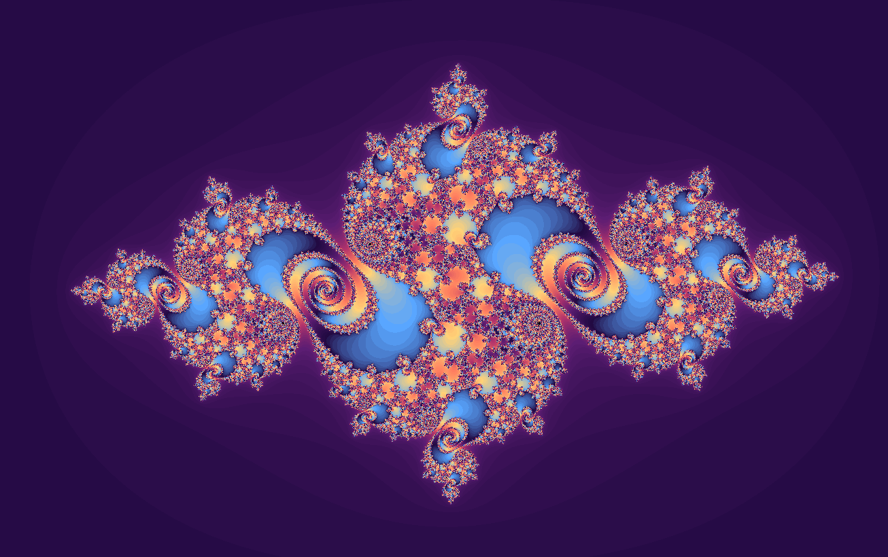
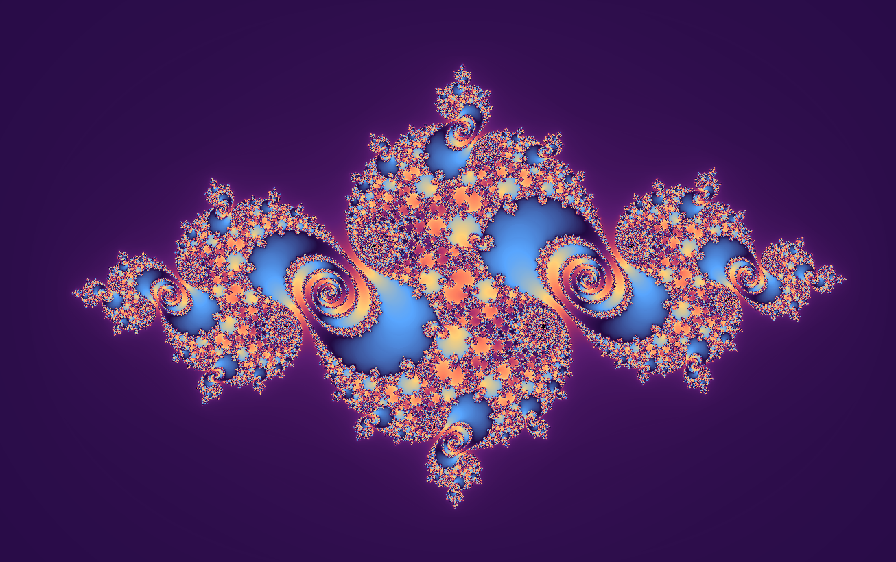
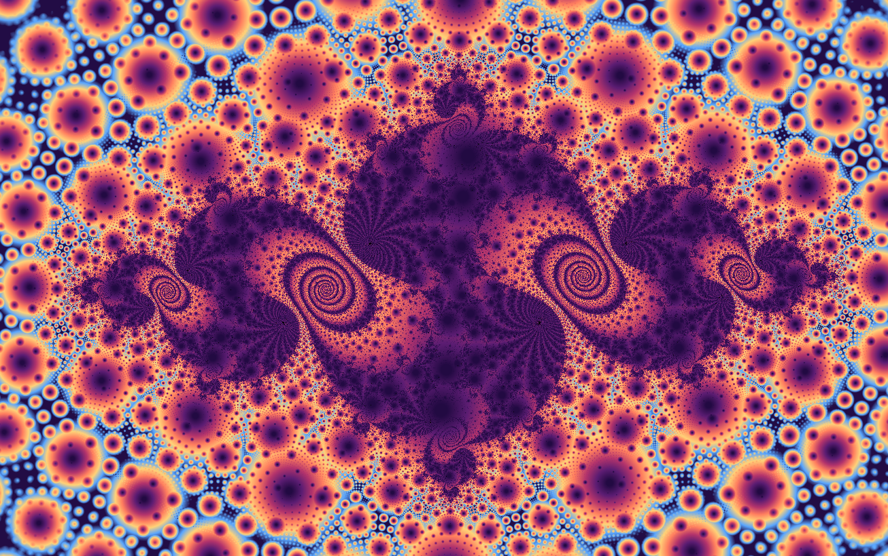
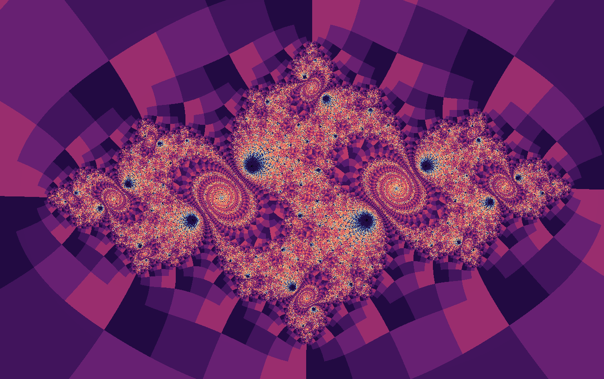
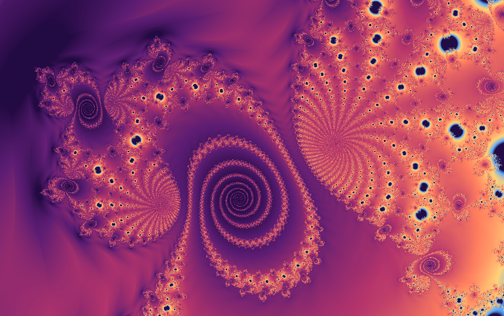
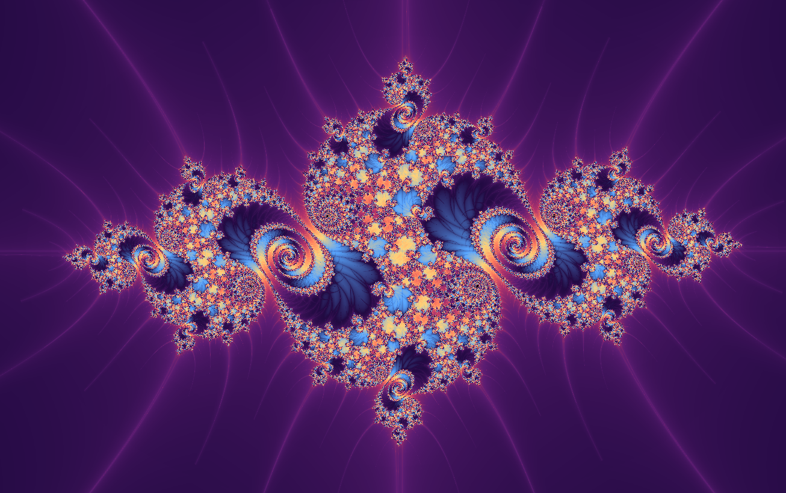

Dynamical plane
Julia Sets
The Mandelbrot set is the atlas; a Julia set is one country seen up close.
A Julia set fixes \(k\) and asks what happens to every possible starting point \(z_0\). Some choices make connected lace. Others scatter into islands.

A good first visit
Start with the default parameter. Look for the boundary between dark stable regions and the colored escaping exterior.
Open the Mandelbrot page and toggle Julia mode from there. Move the Mandelbrot selector and watch the Julia set respond like a live specimen.
Try orbit display near a boundary point. The orbit is the hidden choreography behind the visible lace.
Mathematical notes
Why the Mandelbrot set predicts Julia shapes
For \(f_k(z)=z^2+k\), the filled Julia set contains starting values whose orbits remain bounded. The Mandelbrot set records the parameters \(k\) for which the critical orbit starting at \(0\) remains bounded. For quadratic maps, that critical orbit determines whether the Julia set is connected.
Coloring lenses
The set stays the same, but each rendering method asks a different question about the orbit.


Gaussian integer
Measures how closely escaping orbits pass near the complex integer lattice.
Apply in wxChaos

Triangle inequality
Turns relationships inside the orbit into layered, topographic texture.
Apply in wxChaos
Orbit traps
Colors points by how closely their orbits pass near a chosen trap shape.
Apply in wxChaos